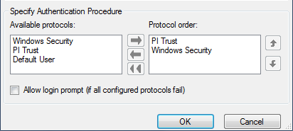

Create a trust to view historical data on a remote system (PI Server)
Explicit logins are not supported in OSIsoft PI Server, beginning with version 3.4.380. You must create a trust for the remote client by completing the following steps:
- Log on as Administrator to the system where PI Server is installed.
- Start the PI System Management Tools (PI SMT) by clicking All Programs > PI System > PI System Management Tools.
- In the PI System Management Tools window, navigate to Security > Mappings & Trusts, and then select the Trusts tab.
-
Start the
Add Trust Wizard by right-clicking in the
Trusts window, and then selecting
New Trust on the context menu.
In the
Add Trust Wizard, complete the following steps:
- Specify a trust name.
- Enable the PI-API Application option.
- Use the Application Name and Client Connection options to set up a trust relationship for one or more application running on a specified client, for all applications running on the client, or for a specified application running on any client.
- Application Name option
- To use the Application Name option, specify up to the first eight characters of the client application's executable file name. For example: specify PREDICTP instead of PREDICTPRO.EXE for the PredictPro client application; specify PREDICT. instead of PREDICT.EXE for the Predict client application; specify CHS.EXE for the Process History View client application.
- Client Connection option for an embedded PI Server historian (PI Server installed on an Application Station) – specify one or both of the following:
- Network Path: the computer name of the client.
or
- IP Address and NetMask:
Trust #1 – 10.4.x.x as the IP address of the DeltaV primary network and 255.255.0.0 as the network mask and IP Address and NetMask.
Trust #2 – 10.8.x.x as the IP address of an existing DeltaV secondary network and 255.255.0.0 as the network mask.
Note:If you do not specify the computer name of the client in Network Path, the trust using 10.4.x.x as the IP address of the DeltaV primary network only takes effect if the connection to the 10.8.x.x IP address of an existing DeltaV secondary network is unavailable.
- Client Connection option for an integrated PI Server historian (PI Server installed on a non-DeltaV workstation) – specify the following:
- Network Path: the computer name of the client.
- Specify DeltaVAdmin as the PI User.
- Start the PI Software Development Kit (SDK) by clicking All Programs > PI System > PI-SDK Utility.
- In the navigation pane of the PI-SDK Utility window, select Connections, and then click File > Connections > Options.
-
In the
Specify Authentication Procedure area, move PI
Trust to the top of the
Protocol order list, followed by Windows
Security, and then click the
OK button.
